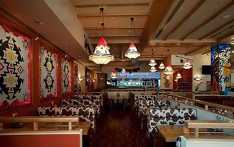
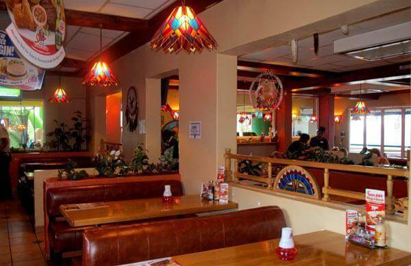
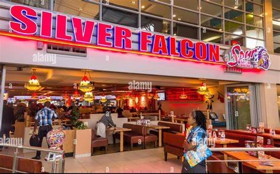

SPUR




A Brief on us : Spur Steak Ranches is a cherished part of South African culture, known for creating special memories and serving mouth-watering meals for over 50 years. Founded in 1967 by Allen Ambor, Spur began with the Golden Spur in Newlands, Cape Town, and has since grown into an internationally recognized brand with many local and international restaurants.
Where are we located : 3rd floor , shop B